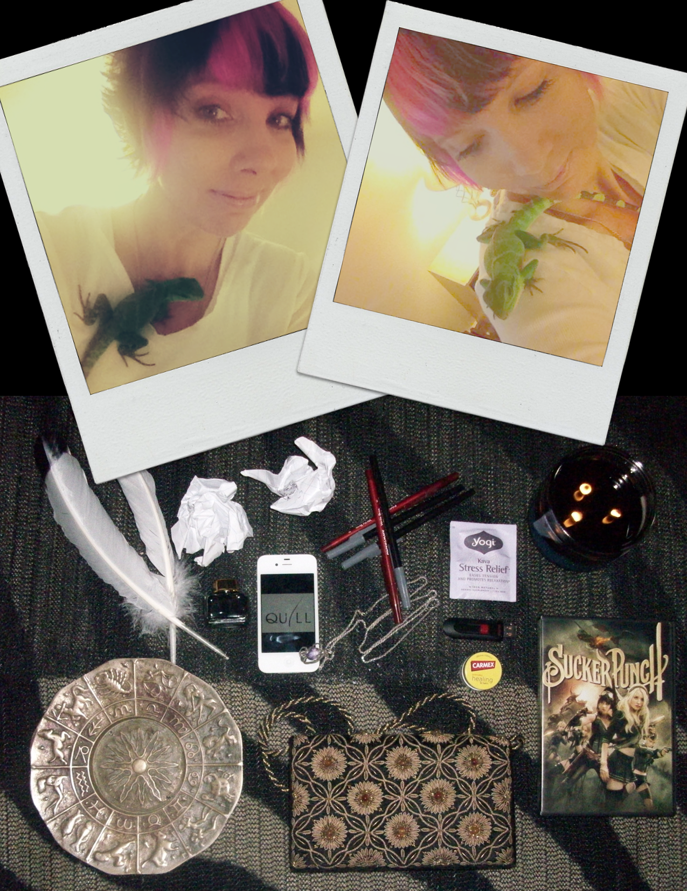

My greatest passion is writing fiction. I also delve into poetry. I write by candle light. It soothes me and helps me relax. I am ambitious, creative, and a bit of a dreamer, so applying discipline is a contest at times. I believe perspective is key and the main tool for digesting reality. I own exotic pets: two Bearded Dragons and one Chinese Water Dragon. Areas of interest include living off the grid, history, and pivotal moments in life. I'm also fascinated by, and drawn to water. I love swimming, the rain, and rafting down the Spokane River. Winter is my favorite season, but I enjoy all seasons--especially as one transitions into the next. I often dream of apocalyptic times; oddly, I quite enjoy them. I'm attracted to intelligence, fresh foods, confidence, and the color white. I dislike arrogance, horrible smells, gusting wind, failing, and paper cuts. One day I hope to have a cabin off the grid where I can go to write a book.
